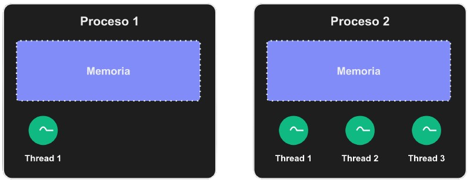

Concurrencia y Paralelismo
Tópicos Avanzados de Programación
Para qué?
- Performance / aprovechar recursos.
- Obligados a responder pedidos en simultáneo.
Y es un tema muchas veces muy poco comprendido.
Qué es "Concurrencia"?
Ejecutar múltiples tareas juntas, compitiendo por los mismos recursos (principalmente CPU).
Qué es "Paralelismo"?
Ejecutar múltiples tareas en simultáneo, en el mismo instante.
El paralelismo es una forma de concurrencia, pero hay otras formas también.
Ej: "hacer un poquito de cada una" es concurrencia sin paralelismo.
"Miro twitter mientras estudio"
Concurrencia? Paralelismo?
Concurrencia pero no paralelismo. Si pauso el tiempo, en cada instante estoy haciendo una cosa, no hay paralelismo.
"Cruzo la calle mientras hablo por teléfono"
Concurrencia? Paralelismo?
Ambos! Concurrencia con paralelismo real. Si pauso el tiempo, estaba haciendo ambas cosas en el mismo instante.
Programas y computadoras
Antes de ir al código, tenemos que entender un par de cosas sobre ejecución de programas.
Procesos, hilos y memoria

Sobre la memoria:
- Cada proceso tiene su propia memoria.
- Los hilos de un proceso comparten la misma memoria.
- Si procesos quieren compartir info, tienen que comunicarse o pedirle al OS tener memoria compartida entre procesos.
Sobre la ejecución:
- Un core puede correr un hilo de un proceso por vez.
- Los procesos y sus hilos se pueden "turnar" para correr un poco cada uno en un core.
- ⬆ esos "cambios de turno" se llaman context switches, no son gratis y nos pueden complicar!
- Normalmente, el Sistema Operativo decide qué corre en qué core a cada instante (no siempre).
Con un solo core, puedo...?
Correr varios procesos?
✅ Sí! Concurrencia, pero sin paralelismo real.
Correr varios hilos de un proceso?
✅ Sí! Concurrencia, pero sin paralelismo real.
En código
Tenemos 3 técnicas para concurrencia y/o paralelismo:
- Multiprocessing.
- Multithreading.
- Async.
Multiprocessing
Correr varios procesos, cada uno haciendo parte del trabajo.
Concurrencia? Paralelismo?
- Si tenemos un solo core, solo concurrencia.
- Si tenemos más de un core, paralelismo real!
La memoria no es compartida...
Qué hacemos si necesitamos compartir info entre los procesos?
- Memoria compartida entre procesos: el OS nos lo permite, pero no es nada fácil de hacer bien!
- Comunicación entre procesos: más lenta, pero bastante más fácil.
Multithreading
Correr varios hilos dentro de un mismo proceso.
Concurrencia? Paralelismo?
Igual que multiprocessing!
- Si tenemos un solo core, solo concurrencia.
- Si tenemos más de un core, paralelismo real.
La memoria es compartida sin hacer nada extra!
- Mucho más fácil que memoria compartida entre procesos: cero trabajo adicional.
- Mucho más rápido que comunicación entre procesos.
Hasta ahora Multithreading y Multiprocessing suenan muy buenos. Pero...

Context Switching y Performance
Cambiar entre procesos o hilos es costoso! Hay que descargar/volver a cargar info de contexto en el procesador.
Esto empeora cuantos más hilos/procesos tengamos.
Context Switching y Race Conditions
Si nos pausan y reanudan hilos/procesos en cualquier momento (cuando el OS decida), nuestra lógica se puede romper!
Race conditions
def actualizar_saldo(nuevo_pago):
saldo_actual = obtener_saldo_desde_la_db()
saldo_actual += nuevo_pago.monto
guardar_saldo_en_la_db(saldo_actual)
Qué pasa si nos pausan en la linea 3, otro hilo/proceso se ejecuta y cambia el saldo en la db, y luego nos vuelve a tocar a nosotros?
Race conditions
- Son muy difíciles de debuguear.
- Requieren coordinación entre hilos/procesos.
- Esa coordinación es código extra, complejidad, y costo de CPU también.
- Es difícil hacerlo 100% sólido y 100% performante!
Async (especialmente IO)
En un solo hilo de un solo proceso, correr muchas "corrutinas" livianas y colaborativas.
La clave: controlamos los context switches.
Este es por lejos el más difícil de entender...
Pero con código se puede visualizar mejor.
Repasando entonces:
- Corrutinas (funciones) pausables.
- Tenemos un loop que va corriendo "un poquito de cada una", hasta su próxima pausa.
- Nosotros decidimos cuándo una corrutina se puede pausar! (context switches)
- Ideal: pausar durante esperas de IO para que otras corran.
- Las corrutinas tienen que colaborar: no "comerse" todo el CPU sin pausar.
Bonus: performance
Cambiar entre corrutinas es mucho más barato que cambiar entre hilos/procesos!
A veces a las corrutinas se les dice "hilos livianos".
Qué tan livianas?: hay servers async que responden 1 millón de requests por segundo.
Bonus 2: debuguear es más fácil
Es muy difícil debuguear código cuando hay hilos/procesos independientes.
En async: 1 hilo, 1 proceso, si pausamos se pausa todo, podemos saltar de una corrutina a otra, etc. Mucho más fácil!
Peeeero...
- Todo el código tiene que ser async (dependencias!), o mandar a threads lo que no sea "async friendly".
- Forma rara/nueva de escribir el código, que no todos entienden bien.
Concurrencia? Paralelismo?
Es concurrencia, pero sin paralelismo.
- En cada instante hay una sola corrutina ejecutándose: usamos un solo core.
- No son hilos! No son procesos! No hay paralelismo en cores!
La memoria es compartida sin hacer nada extra, como en Multithreading.
Pero además, es mucho más fácil evitar race conditions.
- Mucho más fácil y rápido que las opciones para compartir memoria en Multiprocessing.
- Bastante más fácil evitar race conditions que en Multithreading.
Y la performance?
Cuál técnica es más rápida? Depende de la situación? De qué depende? Etc.
CPU heavy code
- Ganamos cuando hay paralelismo real. Solo concurrencia? No ganamos nada!
- Eso quiere decir que Async no nos ayuda en nada.
- Y que MT/MP tampoco nos ayudan si tenemos un solo core.
- Hay que usar MT/MP y tener más de un core.
IO heavy code
- Si tenemos paralelismo real: ganamos performance por correr cosas al mismo tiempo.
- Si tenemos solo concurrencia sin paralelismo (async, o MT/MP con un solo core): igual ganamos! Corremos cosas mientras otros hilos/procesos/corrutinas esperan IO.
- Y async además es más eficiente y facilita evitar race conditions.
Si tenemos N cores, podemos combinar y ser super performantes:
Un proceso por core, usando async en cada proceso para sacarle el máximo de jugo a cada core.
Demo time!
Resolvamos un problema de ejemplo con las 3 técnicas y comparemos tiempos.